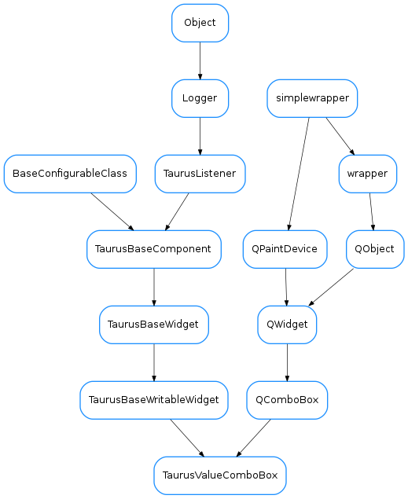

TaurusValueComboBox¶

-
class
TaurusValueComboBox(parent=None, designMode=False)[source]¶ Bases:
PyQt4.QtGui.QComboBox,taurus.qt.qtgui.base.taurusbase.TaurusBaseWritableWidgetThis widget shows a combobox that offers a limited choice of values that can be set on an attribute.
-
addValueNames(names)[source]¶ Add new value-name associations to the combobox.
... seealso:
setValueNames()Parameters: names ( sequence<tuple>) – A sequence of (name,value) tuples, where each attribute value gets a name for display
-
getValue()[source]¶ Get the value that the widget is displaying now, not the value of the attribute.
-
getValueString(value, default='UNKNOWN(%s)')[source]¶ Returns the corresponding name in the combobox out of a value (or a default value if not found).
Parameters: - value – value to look up
- default (
str) – value in case it is not found. It accepts a ‘%s’ placeholder which will be substituted with str(value). It defaults to ‘UNKNOWN(%s)’.
-
keyPressEvent(event)[source]¶ reimplemented to emit an ‘applied()’ signal when Enter (or Return) key is pressed
-
setValueNames(names)[source]¶ Sets the correspondence between the values to be applied and their associated text to show in the combobox.
Parameters: names ( sequence<tuple>) – A sequence of (name,value) tuples, where each attribute value gets a name for display
-
teachDisplayTranslationToWidget(widget, default='UNKNOWN(%s)')[source]¶ Makes a label object change the displayed text by the corresponding value of the combobox. This is implemented for the general case and may be not what you expect in some cases (as for example, it fires a fake periodic event which may be problematic if these are being filtered out).
-